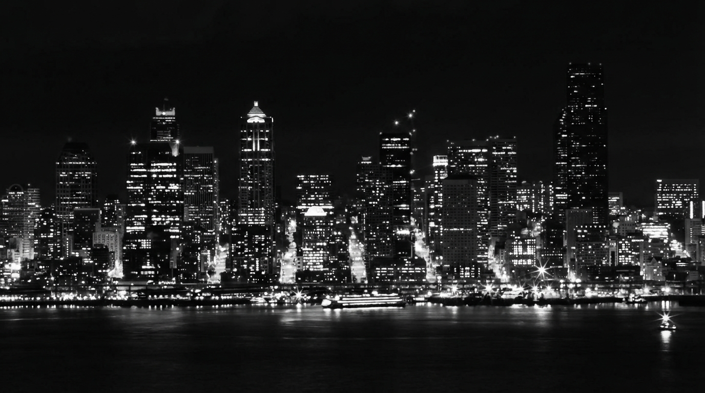

_MG_5575_Original_Original Copy.jpeg
Multi-LLM Analysis
70.0/100
Consensus Score
Original Review
A classic monochromatic capture of the Seattle skyline with strong compositional balance. The primary area for improvement is managing the high-ISO noise and compression artifacts in the negative space to create a cleaner, more professional final print.
- Apply luminance noise reduction
- Lift shadows in the foreground water
- Increase Clarity or Structure on the buildings
The image has strong atmosphere and a pleasing B&W city-night aesthetic, but it appears a bit soft with noticeable noise in the sky and darker tones. Highlight control and targeted midtone contrast/structure, paired with careful noise reduction and a tighter crop, would improve clarity and impact while preserving the intended mood.
- Reduce luminance noise (start around Luminance 20–35) and apply light color noise reduction; mask NR to protect edges where possible
- Recover highlight detail in the brightest light sources using Highlights -30 to -60 and Whites -10 to -25; use a luminance range mask to target only the hottest areas
- Increase midtone contrast and structure with a gentle S-curve plus Clarity/Texture (+10 to +25) applied primarily to buildings (brush/AI mask), not the sky/water
Analysis failed: Error code: 400 - {'type': 'error', 'error': {'type': 'invalid_request_error', 'message': 'Your credit balance is too low to access the Anthropic API. Please go to Plans & Billing to upgrade or purchase credits.'}, 'request_id': 'req_011CXamTV4nuuDhS1SRFppsY'}
Combined Improvements Applied:
- Apply luminance noise reduction
- Lift shadows in the foreground water
- Increase Clarity or Structure on the buildings
- Crop top empty space
- Reduce luminance noise (start around Luminance 20–35) and apply light color noise reduction; mask NR to protect edges where possible
- Recover highlight detail in the brightest light sources using Highlights -30 to -60 and Whites -10 to -25; use a luminance range mask to target only the hottest areas
- Increase midtone contrast and structure with a gentle S-curve plus Clarity/Texture (+10 to +25) applied primarily to buildings (brush/AI mask), not the sky/water
- Refine composition by cropping a small amount from the top (excess empty sky) and slightly from the bottom if needed to place the skyline on a stronger horizontal band; keep the horizon level
- Apply subtle localized dodging and burning: dodge key landmark highlights and burn the outer edges/waterline (vignette or manual) by -0.2 to -0.5 EV
Before & After Comparison